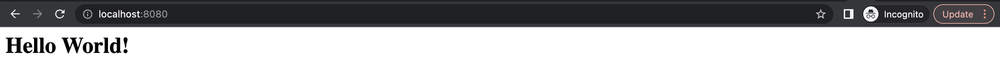
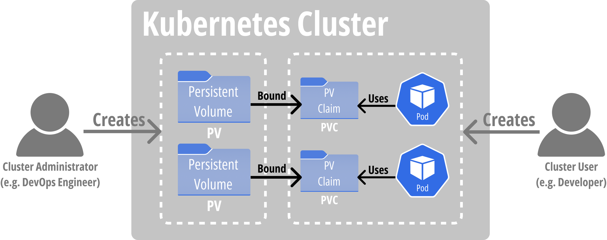

Probe
Probe 란?
- Probe 는 파드의 health check 를 위한 기능으로, Kubelet 이 주기적으로 실행하며 해당 파드가 정상적으로 작동하는지, 혹은 트래픽을 받을 준비가 되어 있는지 확인해주는 기능이다.
- Probe 에는 다음과 같이 세가지 종류가 있다.
- Liveness Probe: 파드가 정상인지 확인하는 기능으로, 파드가 비정상적이라면 컨테이너를 재실행시켜주는 역할이다.
- Readiness Probe: 파드가 트래픽을 받을 준비가 되어있는지 확인하는 기능으로, 파드가 준비가 안되어 있으면 Service 를 통한 접근을 제한한다.
- Startup Probe: 파드가 초기 세팅을 온전히 마칠 수 있도록 기다려주는 역할을 한다.
- 예를 들어, 파드 생성 후 초기 세팅을 마치는데까지 60초가 걸리는 경우 이것을 기다리지 못하고 Liveness Probe 가 작동해서 파드를 재실행시켜버린다면 파드는 영원히 정상적인 상태가 되지 못하기 때문에 필요한 기능이다.
실습 - Liveness Probe
- 다음의 YAML 파일을 이용해 파드를 배포한다.
apiVersion: v1
kind: Pod
metadata:
labels:
test: liveness
name: liveness-exec
spec:
containers:
- name: liveness
image: registry.k8s.io/busybox
args:
- /bin/sh
- -c
- touch /tmp/healthy; sleep 30; rm -f /tmp/healthy; sleep 600
livenessProbe:
exec:
command:
- cat
- /tmp/healthy
initialDelaySeconds: 5
periodSeconds: 5- 위 파드의 컨테이너를 확인하면, 30초에 한번씩
/tmp/healthy파일을 생성하고 지우는 것을 확인할 수 있다. - 또한
livenessProbe로/tmp/healthy파일을 5초마다 확인하고 있는 것을 알 수 있다. - 따라서, 파드가 생성되고 30초간은 liveness probe 가 성공하며 파드가 정상적으로 작동하게 되지만, 30초가 지난 뒤에는 실패하며 파드를 재실행할 것이다.
- 생성 이후 다음의 명령어로 파드의 상태를 모니터링한다.
- 이론상으로는 30초에 한번씩 재실행되어야 하지만, 실제로는 약 77초에 한번씩 재실행되었다.
watch -n 0.2 kubectl get pod liveness-execConfigMap, Secret
ConfigMap 과 Secret 의 역할
- ConfigMap 과 Secret 은 파드에 파일을 전달하는 볼륨의 일종이라고 볼 수 있다.
- ConfigMap 과 Secret 에 data 를 넣어 생성한 후에 파드 내에 마운트시키면 해당 마운트 지점에 작성한 data 를 파일의 형태로 확인할 수 있다.
- 다만 ConfigMap 과 Secret 의 차이점은 ConfigMap 은 plain text 로 저장되는 한편, Secret 은 Base64 인코딩이 되어 (암호화되는 것은 아니지만) 쉽게 읽을 수 없도록 변환된다.
- 이에 ConfigMap 은 .conf 같은 설정파일을 파드 내부에 주입시켜주는 것에 활용되고, Secret 은 DB 접속 비밀번호 등을 저장하고 파드 내에서 사용할 수 있도록 활용된다.
ConfigMap 실습
- NGINX 의
index.html파일을 주입하는 ConfigMap 생성
apiVersion: v1
kind: ConfigMap
metadata:
name: nginx-index
data:
index.html: |
<h1>Hello World!</h1>- 생성한 ConfigMap 을 사용하는 Deployment 생성
apiVersion: apps/v1
kind: Deployment
metadata:
name: nginx
spec:
selector:
matchLabels:
app: nginx
template:
metadata:
labels:
app: nginx
spec:
containers:
- name: nginx
image: nginx:stable
volumeMounts:
- name: nginx-index-cm
mountPath: "/usr/share/nginx/html"
readOnly: true
volumes:
- name: nginx-index-cm
configMap:
name: nginx-index
items:
- key: "index.html"
path: "index.html"- Deployment 를 노출하는 Service 생성
apiVersion: v1
kind: Service
metadata:
name: nginx
spec:
ports:
- name: http
port: 8080
protocol: TCP
targetPort: 80
selector:
app: nginx
type: LoadBalancer- 이후 브라우저를 통해
localhost:8080으로 진입하면 ConfigMap 을 통해 주입해준 페이지를 볼 수 있다.

Namespace, RBAC
Namespace 란?
- 네임스페이스 (Namespace)는 오브젝트들을 묶어 논리적으로 구분지을 수 있게 해주는 오브젝트이다.
- “논리적”으로 구분짓기 때문에 물리적인 격리와는 보안성 등의 측면에서 차이가 난다.
- 쿠버네티스의 모든 리소스는 네임스페이스에 속하거나 (Namespaced object) 클러스터 전역에 속하게 (Cluster-scoped object) 된다.
- 예를들면, Deployment, Pod 같은 오브젝트는 네임스페이스에 종속되고,
- Node 같은 리소스는 네임스페이스에 속하지 않는다.
- 쿠버네티스 네임스페이스에는 대표적으로 네임스페이스를 지정하지 않으면 자동으로 부여되는
defaultnamespace와 쿠버네티스 시스템이 사용하는 오브젝트들이 속하는kube-system이 있다.
RBAC 이란?
- RBAC 이란 Role-Based Access Control 이라는 뜻으로, “역할” 을 “사용자”에게 “부여”하여 권한을 관리하는 방법이다.
- 역할은 “리소스”와 그에 적용할 수 있는 “행동” 을 묶어놓은 것이고, 이것을 대상이 되는 “사용자” 에게 “부여” 하는 방식이다.
- 비유하자면
- “Cloud Engineer” 라는 역할은 “쿠버네티스 클러스터” 라는 리소스에 대해 “관리” 하는 행동을 의미하고
- 역할 부여 대상인 “김해람” 에게 해당 역할을 부여해서 권한 관리를 한다.
쿠버네티스에의 RBAC
- 쿠버네티스에서는 RBAC 을 구현하기 위해 다음과 같은 리소스들을 제공한다.
Role(ClusterRole)RoleBinding(ClusterRoleBinding)
Role에는 파드, 서비스와 같은 리소스와 그에 할 수 있는 행동 (view, edit 등) 을 명시하여 역할을 생성할 수 있도록 하는 리소스이고,- 특정 네임스페이스에만 속하는 역할을
Role, 클러스터 전체에 속하는 역할을ClusterRole로 생성한다.
- 특정 네임스페이스에만 속하는 역할을
RoleBinding은 생성한Role과 부여 대상인 사용자 혹은ServiceAccount를 연결해주는 리소스이다.ServiceAccount는 로봇 계정으로 비유할 수 있다 → 일반 사용자가 클러스터에 계정을 생성하여 작업을 하는 것처럼, 파드가 클러스터 내에서 작업을 하기 위한 로봇 계정이ServiceAccount이다.- 마찬가지로 특정 네임스페이스에만 속하는 역할을 연결하는 리소스가
RoleBinding이고, 클러스터 전체에 속하는 역할을 연결하는 리소스는ClusterRoleBinding이다.
RBAC 예시 (실습 X)
apiVersion: rbac.authorization.k8s.io/v1
kind: Role
metadata:
namespace: default
name: pod-reader
rules:
- apiGroups: [""]
resources: ["pods"]
verbs: ["get", "watch", "list"]apiVersion: rbac.authorization.k8s.io/v1
kind: RoleBinding
metadata:
name: read-pods
namespace: default
subjects:
- kind: User
name: jane
apiGroup: rbac.authorization.k8s.io
roleRef:
kind: Role
name: pod-reader
apiGroup: rbac.authorization.k8s.ioPV, PVC
PV, PVC 란?

- 쿠버네티스는 클러스터 관리자와 클러스터 이용자를 구분하여 볼륨을 관리하는 방법을 제시한다.
- 즉, 클러스터 관리자가 사용할 수 있는 볼륨을 미리 지정해 놓으면, 클러스터 이용자는 해당 볼륨을 자신의 Deployment등에 사용하게 된다.
- 클러스터 관리자가 생성하는 볼륨을 PV (Persistent Volume)이라고 하고,
- 클러스터 이용자가 해당 볼륨을 요청하는 것을 PVC (Persistent Volume Claim)이라고 한다.
- 관리자가 직접 PV 를 생성하여 PVC 에 연결될 수 있도록 할 수도 있지만, 대부분의 경우에는 PV 를 자동으로 생성해주는 PV provisioner 를 구축하여 PVC 가 생성이 되었을 때 자동으로 PV 가 생성되도록 한다.